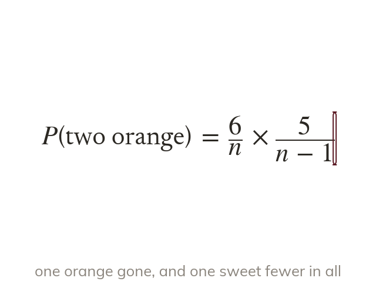

An unknown count, an algebraic probability
With sweets, orange, P(orange) . Without replacement the second pick is
With sweets of which are orange, P(orange) . Without replacement the second pick is from one sweet fewer with one orange fewer, so P(two orange)